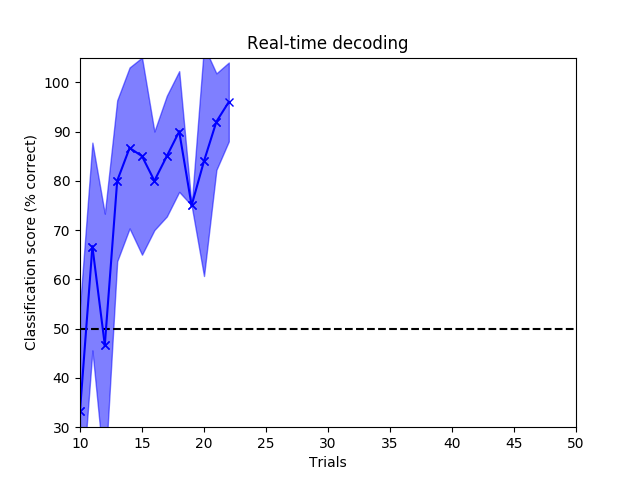

Supervised machine learning applied to MEG data in sensor space. Here the classifier is updated every 5 trials and the decoding accuracy is plotted
Script output:
Opening raw data file /home/jaakko/examples/MNE-sample-data/MEG/sample/sample_audvis_filt-0-40_raw.fif...
Read a total of 4 projection items:
PCA-v1 (1 x 102) idle
PCA-v2 (1 x 102) idle
PCA-v3 (1 x 102) idle
Average EEG reference (1 x 60) idle
Current compensation grade : 0
Range : 6450 ... 48149 = 42.956 ... 320.665 secs
Ready.
Reading 0 ... 41699 = 0.000 ... 277.709 secs...
[done]
4 projection items activated
Just got epoch 1
Just got epoch 2
Just got epoch 3
Just got epoch 4
Just got epoch 5
Just got epoch 6
Just got epoch 7
Just got epoch 8
Just got epoch 9
Just got epoch 10
Just got epoch 11
Just got epoch 12
Just got epoch 13
Just got epoch 14
Just got epoch 15
Just got epoch 16
Just got epoch 17
Just got epoch 18
Just got epoch 19
Just got epoch 20
Just got epoch 21
Just got epoch 22
Just got epoch 23
Just got epoch 24
Just got epoch 25
Just got epoch 26
Just got epoch 27
Just got epoch 28
Just got epoch 29
Just got epoch 30
Just got epoch 31
Just got epoch 32
Just got epoch 33
Just got epoch 34
Just got epoch 35
Just got epoch 36
Just got epoch 37
Just got epoch 38
Just got epoch 39
Just got epoch 40
Just got epoch 41
Just got epoch 42
Just got epoch 43
Just got epoch 44
Just got epoch 45
Just got epoch 46
Just got epoch 47
Just got epoch 48
Just got epoch 49
Time of 2.0 seconds exceeded.
# Authors: Mainak Jas <mainak@neuro.hut.fi>
#
# License: BSD (3-clause)
import numpy as np
import matplotlib.pyplot as plt
import mne
from mne.realtime import MockRtClient, RtEpochs
from mne.datasets import sample
print(__doc__)
# Fiff file to simulate the realtime client
data_path = sample.data_path()
raw_fname = data_path + '/MEG/sample/sample_audvis_filt-0-40_raw.fif'
raw = mne.io.Raw(raw_fname, preload=True)
tmin, tmax = -0.2, 0.5
event_id = dict(aud_l=1, vis_l=3)
tr_percent = 60 # Training percentage
min_trials = 10 # minimum trials after which decoding should start
# select gradiometers
picks = mne.pick_types(raw.info, meg='grad', eeg=False, eog=True,
stim=True, exclude=raw.info['bads'])
# create the mock-client object
rt_client = MockRtClient(raw)
# create the real-time epochs object
rt_epochs = RtEpochs(rt_client, event_id, tmin, tmax, picks=picks, decim=1,
reject=dict(grad=4000e-13, eog=150e-6))
# start the acquisition
rt_epochs.start()
# send raw buffers
rt_client.send_data(rt_epochs, picks, tmin=0, tmax=90, buffer_size=1000)
# Decoding in sensor space using a linear SVM
n_times = len(rt_epochs.times)
from sklearn import preprocessing # noqa
from sklearn.svm import SVC # noqa
from sklearn.pipeline import Pipeline # noqa
from sklearn.cross_validation import cross_val_score, ShuffleSplit # noqa
from mne.decoding import EpochsVectorizer, FilterEstimator # noqa
scores_x, scores, std_scores = [], [], []
filt = FilterEstimator(rt_epochs.info, 1, 40)
scaler = preprocessing.StandardScaler()
vectorizer = EpochsVectorizer()
clf = SVC(C=1, kernel='linear')
concat_classifier = Pipeline([('filter', filt), ('vector', vectorizer),
('scaler', scaler), ('svm', clf)])
data_picks = mne.pick_types(rt_epochs.info, meg='grad', eeg=False, eog=True,
stim=False, exclude=raw.info['bads'])
for ev_num, ev in enumerate(rt_epochs.iter_evoked()):
print("Just got epoch %d" % (ev_num + 1))
if ev_num == 0:
X = ev.data[None, data_picks, :]
y = int(ev.comment) # the comment attribute contains the event_id
else:
X = np.concatenate((X, ev.data[None, data_picks, :]), axis=0)
y = np.append(y, int(ev.comment))
if ev_num >= min_trials:
cv = ShuffleSplit(len(y), 5, test_size=0.2, random_state=42)
scores_t = cross_val_score(concat_classifier, X, y, cv=cv,
n_jobs=1) * 100
std_scores.append(scores_t.std())
scores.append(scores_t.mean())
scores_x.append(ev_num)
# Plot accuracy
plt.clf()
plt.plot(scores_x, scores, '+', label="Classif. score")
plt.hold(True)
plt.plot(scores_x, scores)
plt.axhline(50, color='k', linestyle='--', label="Chance level")
hyp_limits = (np.asarray(scores) - np.asarray(std_scores),
np.asarray(scores) + np.asarray(std_scores))
plt.fill_between(scores_x, hyp_limits[0], y2=hyp_limits[1],
color='b', alpha=0.5)
plt.xlabel('Trials')
plt.ylabel('Classification score (% correct)')
plt.xlim([min_trials, 50])
plt.ylim([30, 105])
plt.title('Real-time decoding')
plt.show(block=False)
plt.pause(0.01)
plt.show()
Total running time of the script: (0 minutes 43.170 seconds)
Download Python source code: plot_compute_rt_decoder.py